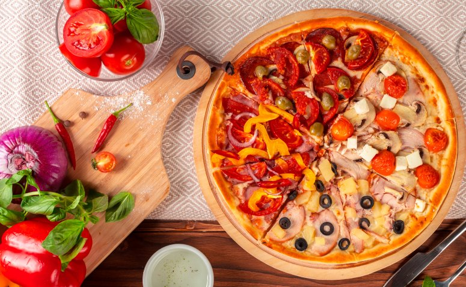

Sobre
Localização
Localizado na Avenida das Flores, centro de Vila flores, no andar comercial do prédio comercial.
Ou encontre-nos em Veranópolis, Nova Prata, Fagundes Varela, Bento Gonçalves, Garibaldi, Guaporé, Nova Bassano, Protásio Alves e Vila Flores.
Ingredientes
Os ingredientes são todos de ótima qualidade, produzidos nas pequenas empresas vilaflorenses. O leite e seus derivados e o salame são exemplos de produtos feitos na cidade.
Políticas
Para nós, optamos pelos melhores ingredientes, além de não desperdiçar comida, o ambiente da pizzaria é climatizado, limpo e deve ser mantido pelos que frequentam.